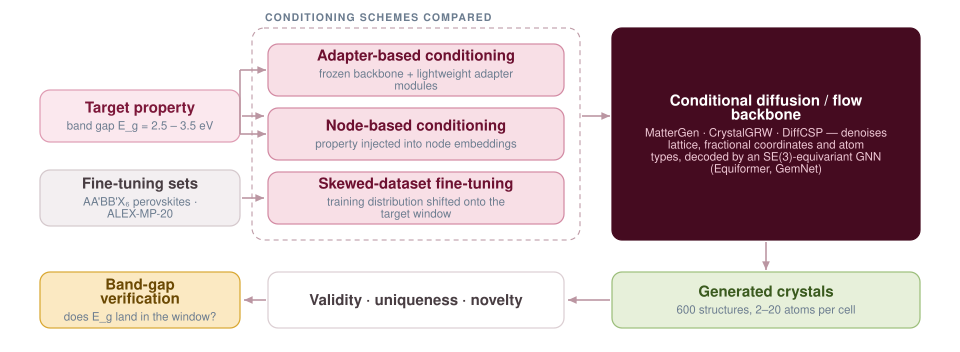

Steering Crystal Generation Toward a Target Band Gap
A generative model that produces valid crystals has solved only half of inverse design. The other half is control — actually getting the material you asked for. This work compares three ways of injecting a target band gap into diffusion-based generators and measures what each one buys in control and in novelty.

Why the band gap is the property to control
Band gap governs the electronic and optical behaviour of an inorganic crystal. It decides whether the material is a metal, a semiconductor or an insulator, and it fixes absorption and emission wavelength — which is what makes it the property that matters for LEDs, lasers, photovoltaics and semiconductor devices generally.
It is also hard. Band gap is difficult for machine learning models to predict in the first place, and DFT datasets systematically underestimate experimental values. Generative models inherit all of that difficulty and add their own: producing a crystal that is valid is routine, producing one whose band gap lands in a requested window is not.
How existing models take conditioning
Part of this project was mapping how the field currently injects property information, because the schemes differ in how deeply the signal reaches:
- DiffCSP embeds the target property into a latent vector and concatenates it with the input at every diffusion step.
- CDVAE conditions only at sampling, projecting the target into the VAE latent space to guide the diffusion decoder after encoding.
- Con-CDVAE conditions both encoder and decoder, during training as well as sampling, so the model learns a joint representation of structure and property.
- DP-CDVAE integrates the target into the posterior distribution, encoding structure and property into a joint latent space.
- FTCP attaches a target-learning branch to the latent space, mapping latent points to user-specified properties.
The three schemes implemented
- Adapter-based conditioning. The pretrained backbone stays frozen and lightweight adapter modules carry the property signal — cheap to train and easy to swap per target property.
- Node-based conditioning. The property is injected directly into the node embeddings, so it reaches the message-passing computation rather than sitting alongside it.
- Skewed-dataset fine-tuning. The fine-tuning distribution is deliberately shifted onto the target band-gap window, changing what the model considers typical instead of telling it what to aim for.
Backbones and decoders
The schemes were examined on state-of-the-art generative backbones including MatterGen, CrystalGRW and DiffCSP, using diffusion-based equivariant GNN decoders — Equiformer and GemNet. Equivariance is not decorative here: it is what makes the model respect the rotational and translational symmetries of a crystal lattice, so a generated structure does not depend on the arbitrary frame it was written in. Riemannian flow matching provides the alternative generative formulation in the comparison.
Outcome
Across the conditioning schemes the models showed up to a five-fold improvement in both generation control and novelty — valid crystals with the target band gap, in regions of chemical space that standard generative approaches had not been reaching.
Evaluation
Models were fine-tuned on AA'BB'X6 double perovskites and on MP-20, with adapter-module runs pretrained on ALEX-MP-20. Each configuration generates several hundred structures — 10-atom cells in one protocol, 2–20 atom cells in another — scored on validity, uniqueness, novelty against the fine-tuning set, and the fraction whose band gap falls inside the requested 2.5–3.5 eV window.